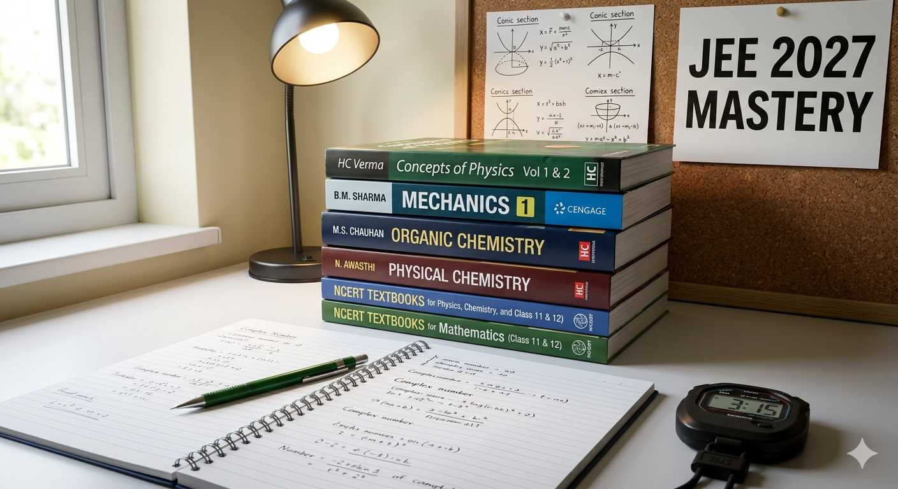
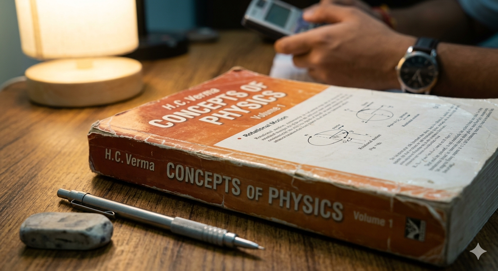
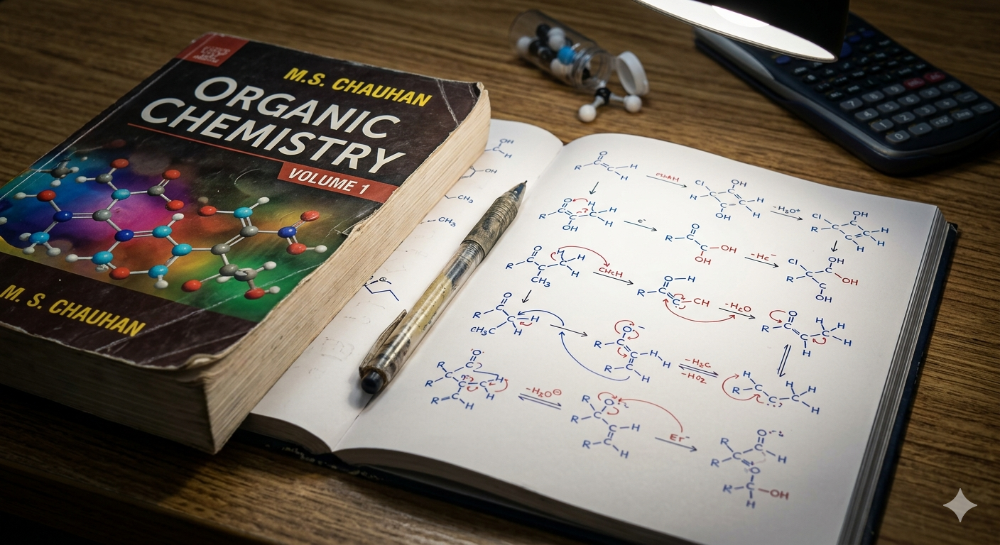

The Ultimate Guide to Best Books for JEE 2027 Success
Preparing for JEE 2027 is a marathon, and your choice of study material is one of the most critical decisions you'll make. The market is flooded with books, but studying from the wrong ones can waste precious time and create confusion. To achieve a top rank, you need a streamlined set of books that build conceptual clarity and provide ample advanced-level practice. This guide presents a subject-wise list of the best books recommended by toppers and experts.

Image Alt: jee-best-books-overview.jpg (An overview of essential JEE preparation books)
1. The Non-Negotiable Foundation: NCERT
Before moving to advanced reference books, NCERT Textbooks for Class 11 and 12 are absolutely essential. Many questions in JEE Mains, especially in Chemistry and certain topics in Physics, are directly based on NCERT. Treat them as your bible.
- NCERT Physics (Class 11 & 12)
- NCERT Chemistry (Class 11 & 12)
- NCERT Mathematics (Class 11 & 12)
2. Best Books for Physics
Physics requires a mix of strong conceptual understanding and rigorous problem-solving. Here are the top picks:
For Conceptual Clarity & Practice (The Gold Standard)
- Concepts of Physics (Vol 1 & 2) by H.C. Verma: Invaluable for building a strong conceptual foundation and understanding the application of core principles. Every aspirant should solve this book.
For Extensive Problem Solving & Advanced Preparation
- Understanding Physics Series by D.C. Pandey (Arihant): A multi-volume set perfect for structured learning with extensive solved examples and practice questions of varying difficulty levels.
- Fundamentals of Physics by Halliday, Resnick, & Walker: An excellent resource for deep dives into concepts, particularly useful for understanding the intricacies of the theory.
- Problems in General Physics by I.E. Irodov: Only for advanced-level problem-solving after you have mastered other resources. Select problems are incredibly challenging and rewarding.

Image Alt: physics-hcv-book.jpg (Focus on H.C. Verma, a standard reference)
3. Best Books for Chemistry
Chemistry is divided into three parts, each with its own set of recommended books:
A. Physical Chemistry
- Physical Chemistry by P. Bahadur: Great for practice, with numerous problems catering to the JEE level.
- Physical Chemistry by O.P. Tandon: Another comprehensive book known for its detailed approach.
- Problems in Physical Chemistry by N. Awasthi: Focused purely on problem-solving, with excellent exercises.
B. Organic Chemistry
- Organic Chemistry by Morrison & Boyd: Useful for in-depth conceptual understanding of reactions and mechanisms.
- Organic Chemistry by Solomons & Fryhle: Excellent for understanding complex reaction mechanisms, often recommended for advanced preparation.
- Concise Inorganic Chemistry by J.D. Lee (Adapted for JEE): For conceptual depth beyond NCERT.
- Practice in Organic Chemistry by M.S. Chauhan: A must-have for targeted practice in mechanisms and problem-solving.
C. Inorganic Chemistry
- NCERT Chemistry (Class 11 & 12): The most important resource. Do not ignore it.
- Inorganic Chemistry by J.D. Lee: For advanced understanding, especially when adapted for the JEE syllabus.

Image Alt: chemistry-organic-ms-chauhan.jpg (Highlighting key Organic Chemistry practice)
4. Best Books for Mathematics
Maths is all about practice. These books will help you master problem-solving:
For Comprehensive Practice & Step-by-Step Learning
- Cengage Mathematics Series by B.M. Sharma: A multi-volume set providing comprehensive coverage, a wide variety of solved examples, and an immense number of practice problems. Highly popular among aspirants.
- Mathematics Series by Amit M. Agarwal (Arihant): Another strong option similar in structure to Cengage, offering great explanations and extensive problem sets.
For Advanced Problem Solving & Specific Topics
- Higher Algebra by Hall & Knight: A classic book, specifically useful for topics like Combinatorics, Sequences & Series.
- Plane Trigonometry Part 1 by S.L. Loney: Excellent for building a strong foundation in Trigonometry concepts.
- Coordinate Geometry by S.L. Loney: Comprehensive and detailed, perfect for mastering Coordinate Geometry.
- Problems in Calculus of One Variable by I.A. Maron: A challenging book focused purely on advanced Calculus problem-solving.
5. The Final Ingredient: Previous Year Questions (PYQs)
Must-Do Resource: Alongside reference books, solving Previous Year Questions (PYQs) is absolutely crucial. They are the single best indicator of the type, pattern, and difficulty level of questions asked in JEE. Aim to solve at least 15-20 years of PYQs for both Mains and Advanced. Look for a book like MTG 46+18 Years or Disha publication that provides topic-wise solutions.
Conclusion
Choosing the right books is only the first step. Success in JEE 2027 comes from studying consistently from a select few high-quality resources and practicing extensively. Don't fall into the trap of collecting too many books. Start with NCERT, build your core concepts with fundamental reference books, and then progress to advanced problem-solving. Plan your schedule, solve PYQs regularly, and revise consistently. With dedication and the right tools, you can achieve your goal!